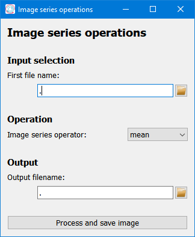
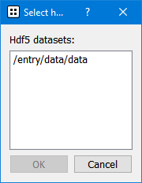
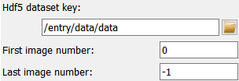

Image series operations window#
The Image series operations window allows to perform operations (max, sum, average) on a series of images from one or multiple files.
Input Selection#
The names for the first and last file must be given. The input field for the last filename will appear after selecting the first name. Pydidas will select all the files in the directory which are between the first and last file, including these two. For the selection, files will be sorted by name.
When selecting an Hdf5 file as first file, a pop-up will show to select the dataset. The pop-up will show all datasets in the selected file. The user’s selection will automatically be entered in the respective field for the Hdf5 dataset key.
In addition, to the dataset name, the first and last frame can be selected for Hdf5 datasets. These settings will be applied to each file. A value of -1 for the last image number will select all images in the file.
Operation#
This Parameter controls which type of Operation shall be performed on the image series. The selection choice correspond to the mathematical names of the operations and should be self-explanatory.
Output#
The output filename gives the name under which the result will be exported.
Process and export image#
This button will start the processing and close the window after the processing has finished.